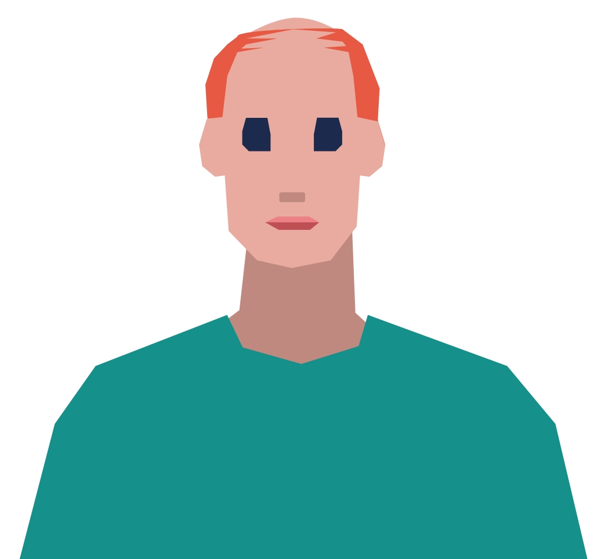
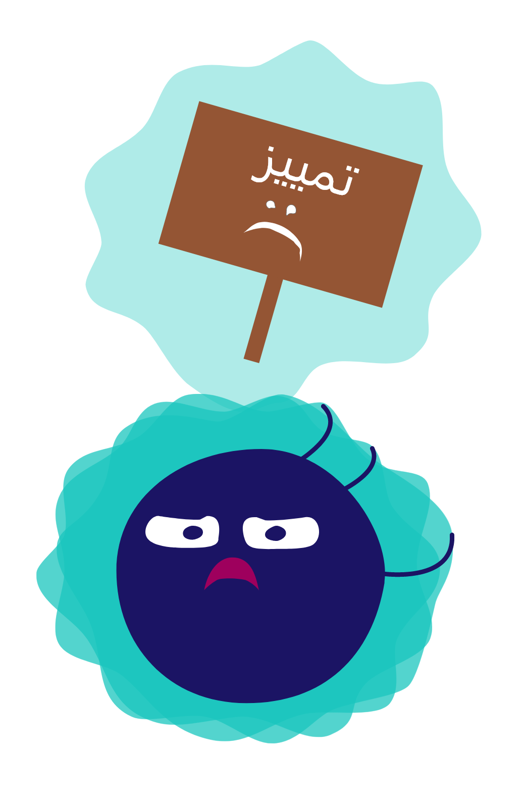
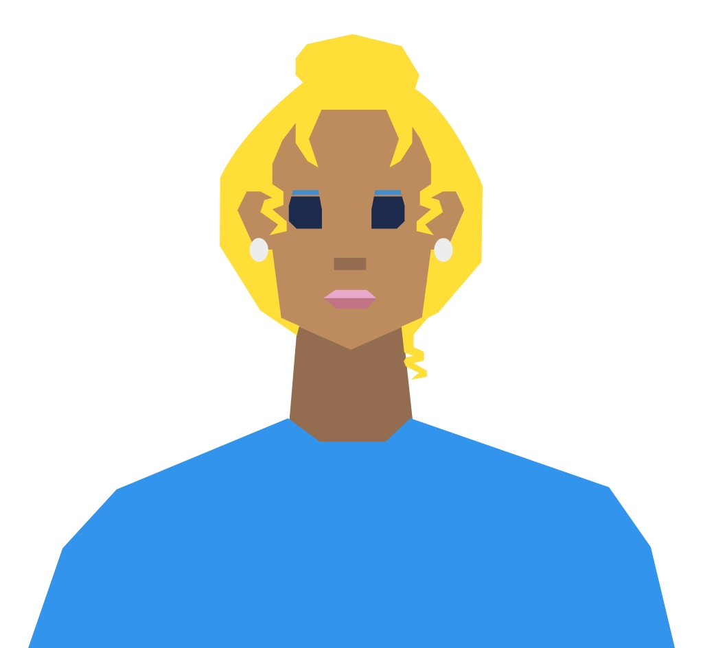
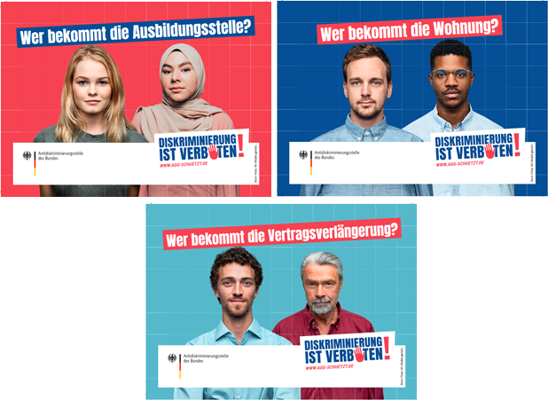

التمييز كلمة لاتينية. وتعني في الألمانية "التمييز"، أي حرمان أو إهانة مجموعات أو أفراد وفقًا لقيم تمييزية معينة أو على أساس مواقف أو تحيزات أو ارتباطات عاطفية غير مدروسة، وأحيانًا غير واعية.
ما هي الامتيازات؟
الامتياز كلمة لاتينية أيضاً وتعني "حق خاص". أي حق يتمتع به بعض الناس ولا يتمتع به آخرون. هناك العديد من أنواع الامتيازات التي تنتج عن الخصائص الجسدية/النفسية (مثل الجنس ولون البشرة والصحة) والخصائص الاجتماعية (مثل التعليم والقدرة المالية) وغيرها من الخصائص.
حسناً، لقد فهمت. لكن هذا لا يزال يبدو نظرياً جداً. ما علاقة كل هذا بحياتنا اليومية، هيا بنا نلقي نظرة الآن.
عوائق في الحياة
يسمى ما يتعين على العداءات القفز فوقه بالعقبة أو العائق. وهذا يعني أن هناك شيئًا ما في طريقنا. علينا إما أن نسلك طريقًا آخر أو أن نقفز فوقه. قد يكون هذا شاقاً للغاية.
بعض الناس لديهم عوائق أكثر
بعض الناس لديهم عوائق في طريقهم أكثر من غيرهم. عليهم أن يقفزوا أكثر، ويكتبوا المزيد من الطلبات، ويبذلوا المزيد من الجهد في المدرسة -- للحصول على نفس النتيجة. وهذا ما يسمى بالتمييز.
بعض الناس ليس لديهم عوائق
وهناك آخرون لا يواجهون أي عائق أو القليل من العوائق في طريقهم. وهذا ما يسمى بالامتياز. في بعض الأحيان يعني الامتياز ببساطة عدم وجود عوائق. يُسمح لهؤلاء الأشخاص بالمرور من باب بينما هذا الباب مغلق أمام الآخرين.
أنواع التمييز
هناك العديد من أنواع التمييز المختلفة. وفيما يلي بعض الأمثلة:
ما هو التمييز؟
آها! إذن التمييز هو عندما لا أُعامل مثل باقي البشر.
ليس دائماً تمييزاً
هذا ليس صحيحاً تماماً. لا يُعامل الجميع دائماً على قدم المساواة. ولكن الاختلاف في المعاملة لا يعد دائماً تمييزاً.
ما هو التمييز؟
إليك بعض الأمثلة الإضافية:
آها! إذن التمييز هو عندما يتم معاملتي بشكل مختلف، على سبيل المثال بسبب ديني أو لون بشرتي أو إعاقتي. إذن عندما أكون جيداً ومؤهلاً مثلهم ولكن مع ذلك لا أحظى بنفس الحقوق.
من الذي يتعرض للتمييز؟
كل هذا يجعلني حزيناً جداً. لماذا العالم غير عادل إلى هذا الحد؟ (يتنهد) لكن بطريقة ما أريد أن أفهم ذلك أيضاً. من الذي يتعرض للتمييز ضد من؟ ولماذا؟ سيكون العالم مكاناً أجمل بكثير إذا تركنا هذا وشأنه.
الطبيعة المتعددة للتمييز
للتمييز أوجه عديدة. من المؤكد أن الجميع قد شعروا بالتمييز ضدهم بطريقة أو بأخرى. ومع ذلك، هناك خصائص تؤدي إلى تعرض بعض الأشخاص للتمييز أكثر من غيرهم.
أسباب التمييز
وتشمل هذه:
الأصل العرقي/لون البشرة
الجنس
الانتماء الديني
العمر
الميول الجنسي
التمييز المتعدد
بعض الأشخاص لديهم أكثر من واحدة من هذه الخصائص. وفي بعض الأحيان يتم التمييز ضدهم مرتين أو ثلاث مرات. ويُعرف هذا بالتمييز المتعدد.
أنواع التمييز المختلفة
أنواع التمييز تختلف. يمكن للنظام أن يميز من خلال القوانين. ويمكن للمؤسسات أن تمارس التمييز، مثل المدارس أو الشرطة. كما يمكن للأفراد أيضاً أن يمارسوا التمييز، وأحياناً يفعلون ذلك دون أن يدركوا ذلك أو يقصدوا أي ضرر.
شهادة غونتر

غونتر، والد باول
مرحباً، أنا غونتر، والد باول. أنا أعرف معنى التمييز، فكثيراً ما تعرض ابني باول للتمييز لأنه مثلي الجنس. وعلى الرغم من أنني أعرف ما هو التمييز، فقد أميز ضد بعض الأشخاص. في شركتي لقد قمت بترقية الرجال فقط - حتى لو كانت النساء أفضل. لماذا كان ذلك؟ لا أعرف حقاً. لا أعتقد أنني فكرت في الأمر على الإطلاق وأنا آسف.
صورة التمييز

التمييز المتبادل
والأهم من ذلك، يمكن للأشخاص الذين يتعرضون للتمييز أن يمارسوا التمييز ضد أشخاص آخرين في مواقف أخرى.
شهادة ناتاليا

ناتاليا
مرحباً، أنا ناتاليا. كثيراً ما شعرت بالتمييز في المدرسة عندما كان الآخرون يسخرون من اسمي الأوروبي الشرقي، كنت التلميذة الوحيدة غير الألمانية هناك وغالباً ما رفضوا اللعب معي.
ومع ذلك، كنت أيضاً في بعض الأحيان أشارك في تمييز الآخرين. أذكر عندما لم نسمح لصبي على كرسي متحرك بلعب الكرة معنا. لم نهتم بإشراكه في اللعب. أشعر بالحرج عندما أتذكر ذلك.
تعقيد الموضوع
هذا الأمر يزداد تعقيداً. في بعض الأحيان يميز الناس دون قصد. ببساطة لأن لديهم صور مسبقة في رؤوسهم. لكن من أين تأتي هذه الصور؟ وماذا عن المجتمع والنظام؟ هل يميزان أيضاً عن غير قصد؟
التحيز والسلطة
التمييز له علاقة بالتحيز والسلطة. التحيزات عميقة في الأذهان. وأحياناً لا ندرك وجودها حتى. لهذا السبب يميز الناس أحياناً ضد أشخاص آخرين دون إدراك. ولكن للأسف فإن الكثير من التمييز متعمد ومقصود.
دور السلطة
كلنا لدينا أحكام مسبقة. ولكن يجب ألا نعامل الآخرين بشكل مختلف بسببها. ما هو دور السلطة في ذلك؟
القوة والتمييز
الشخص الذي لا يملك الكثير، لا يمكن أن يؤخذ منه الكثير. والشخص الذي يميز ضد الآخرين على الأغلب لديه شيء لا يريد أن يتشاركه مع الآخرين.
الديمقراطية والأقليات
في النظام الديمقراطي، دائماً ما يكون للأكثرية وزناً أكبر. فهي التي تتخذ القرارات. ولهذا السبب الأقليات في ألمانيا تتأثر في كثير من الأحيان بالتمييز الهيكلي. الأقليات هم، على سبيل المثال، الأشخاص من أصول أجنبية، والأشخاص ذوي الاحتياجات الخاصة، والأشخاص الذين لا ينتمون إلى الكنيسة المسيحية والكثير غيرهم.
السؤال عن الحلول
وماذا يمكننا أن نفعل حيال ذلك؟
الأسس القانونية
في النظام الديمقراطي هناك قوانين تضمن حقوق مجموعات معينة. وهي مصممة لحماية الأقليات.
القانون الأساسي الألماني
منذ عام 1949 تنص المادة 3 من القانون الأساسي الألماني على أن:
"جميع الناس متساوون أمام القانون"
و
"لا يجوز معاملة أي شخص بشكل مختلف أو تفضيله بسبب جنسه أو نسبه أو "عرقه" أو لغته أو موطنه وأصله أو إيمانه أو آرائه الدينية أو السياسية. لا يجوز معاملة أي شخص بشكل مختلف بسبب إعاقته."
محدودية الحماية القانونية
هذه القوانين مهمة جداً ومن الجيد أن تكون موجودة. ومع ذلك، ما زالت مجموعات معينة تتعرض للتمييز مراراً وتكراراً. فهي لا تحظى بحماية كافية من هذه القوانين.
قانون المساواة العام الألماني
لتغيير هذا الوضع، يوجد منذ عام 2006 قانون جديد: قانون المساواة العام (AGG):
"هدف القانون هو منع أو إزالة التمييز على أساس "العرق" أو الأصل العرقي أو الجنس أو الدين أو المعتقد أو الإعاقة أو العمر أو الهوية الجنسية."

المساعدة المتاحة
الأشخاص الذين يتعرضون للتمييز لديهم قوانين تحميهم. لكن غالباً ما يكون من الصعب على الفرد الواحد تطبيق هذه القوانين. يمكن لمكتب مكافحة التمييز أن يساعد في ذلك.
طلب المساعدة
إذا تعرضت للتمييز، توجه إلى مكتب مكافحة التمييز في منطقتك. التمييز ليس أمراً مقبولاً أبداً وأنت لست وحيداً في هذا. يمكنك الحصول على المساعدة من مكتب مكافحة التمييز. وهنا ستجد معلومات أكثر وجهات أخرى يمكنها مساعدتك.